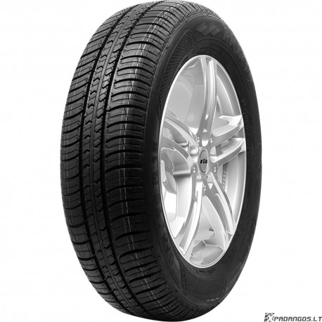

Welcome to automobilių-padangos
Lengvųjų automobilių padangos | www.PadanguParduotuve.lt
2020.10.28 09:17 Pristatymas visoje Lietuvoje Garantija visoms prekėms Mano paskyra Mano paskyra
Tuščias
+370 614 82222
+370 614 82222
Meniu
Prekių katalogas Lengvųjų automobilių padangos Lieti ratlankiai Motociklų padangos Sunkvežimių padangos Akumuliatoriai Ratų grandinės Ratlankių aksesuarai Žieminės padangos Vasarinės padangos Universalios padangos Informacija pirkėjams Apie mus Apmokėjimo sąlygos Pristatymo sąlygos Garantija visoms prekėms Naudinga info Padangų ženklinimas Padangų testai Akumuliatorių ženklinimas Gamintojai Padangų dydžių konfigūratorius Ratlankių modelių konfigūratorius Montavimo partneriai Kontaktai Paieška pagal dydį Paieška pagal automobilį Kaip rinktis padangas? Markė:
Pasirinkite Acura Alfa Romeo Alpine ARO Aston Martin Audi Bentley BMW BMW Alpina Borgward Bugatti Buick BYD Cadillac Changan Chery Chevrolet Chrysler Citro?n Dacia Daewoo Daihatsu Datsun Dodge Dongfeng DS Eagle FAW Ferrari Fiat Fisker Force Ford Geely Genesis GEO GMC Great Wall Haval Hindustan Holden Honda Hummer Hyundai Infiniti Isuzu Iveco JAC Jaguar Jeep Jinbei Kia LADA Lamborghini Lancia Land Rover Lexus Lifan Lincoln Lotus Mahindra Maruti Maserati Mazda McLaren Mercedes-Benz Mercury MG MINI Mitsubishi Mosler Nissan Oldsmobile Opel Panoz Perodua Peugeot Plymouth Polaris Pontiac Porsche Proton Ram Ravon Renault Renault Samsung Roewe Rolls-Royce Rover Saab Saturn Scion Seat Skoda Smart SsangYong Subaru Suzuki Tata Tesla Toyota Vauxhall Venucia Volkswagen Volvo Brilliance FAW Besturn Cupra Qiantu Modelis:
- Metai:
- Modifikacija:
- Rinktis kitą automobilį Paieška pagal dydį Pasirinkite savo automobilį arba pradėkite paiešką pagal dydį
Kaip rinktis padangas?
Visų pirma, nuspręskite, kuria paieška naudositės: paieška pagal automobilį ar paieška pagal dydį . Pasirinkę savo automobilį arba iškart įvedę norimus išmatavimus galėsite rinktis papildomus padangų parametrus, tokius kaip: sezonas, gamintojas, kokybės lygis, tipas, dygliavimas, kuro sanaudos ir kitus.
Paieška pagal automobilį
Įveskite savo transporto priemonės markę, modelį, gamybos metus bei variklio modifikaciją. Išvysite visus galimus padangų išmatavimus, kuriuos leidžia naudoti automobilio gamintojas. Paryškinti dydžiai nurodo pagrindinius originalius išmatavimus. Spauskite ant norimo dydžio ir sistema parodys visas galimas padangas. Toliau rezultatus galėsite filtruoti pagal kitus padangų parametrus: sezonas, gamintojas ir kitus. Jei nuspręsite paiešką pratęsti kartu koreguodami ir padangų dydžio parametrus, sistema įspės apie neatitikimus gamintojo rekomenduojamiems dydžiams.
Svarbu:
Paieška pagal dydį
Pasirinkę norimą išmatavimą (plotis, aukštis, skersmuo) išvysite visą šio dydžio padangų pasiūlą. Kartu (nepaisant eiliškumo) galite filtruoti ir pagal kitas padangų savybes: sezonas, gamintojas, tipas ir kitas.
Pagrindinės padangų savybės
Visos transporto priemonių padangos skirstomos pagal išmatavimus, sezoniškumą, protektoriaus raštą ir paskirtį. Įsigykite padangas ne aklai, o tvirtai žinodami visas jų savybes bei svarbiausius bruožus. Dar daugiau sužinokite čia
1. Padangų išmatavimai, pvz. 195/65 R15 91 T
Pirmas skaičius (195) nurodo padangų plotį milimetrais, t.y. 19,5 cm., antras skaičius (65) reiškia padangos aukštį. Tačiau šis padangos parametras nėra matuojamas milimetrais - tai santykinis dydis, apskaičiuojamas pagal tam tikrą formulę, kurioje kintamieji yra padangos plotis ir ratlankio skersmuo. Raidė R nurodo, kad padanga yra radialinė. Skaičius 15 nurodo ratlankio skersmens diametrą coliais arba ant kokio dydžio ratlankio naujos padangos gali būti montuojamos. Skaičius 91 nurodo krovos indeksą, o raidė T – greičio indeksą.
2. Protektorių raštai:
a) Standartinis (nekryptinis) – šis protektoriaus raštas daugiausia naudojamas nedidelių padangų gamyboje, kurios montuojamos ant nedidelių ekonominės ir šeimyninės klasės automobilių. Retai begaminamas, gana senas inžinerinis sprendimas, bet pakankamai universalus, paprastas, praktiškas ir ekonomiškas. Šio protektoriaus rašto, dažnai universalios padangos neturi nurodytos sukimosi krypties, nei vidinės ar išorinės pusės.
b) Kryptinis – šis protektoriaus raštas turi aiškiai rodykle nurodytą sukimosi kryptį (angl. rotation), o protektoriaus piešinys primena kartais eglutę. Tai reiškia, kad šios rūšies tiek žieminės, tiek vasarinės padangos gali suktis tik nurodyta kryptimi, nes sumontuotos priešingai turės žymiai blogesnes akvaplanavimo ir sukibimo savybes bei trumpiau tarnaus. Kryptines padangas turėtų rinktis vairuotojai, kurie savo automobilius dažniau vairuoja rajoniniuose keliuose, važinėja trumpesniais atstumais ir iš padangų tikisi daugiau aštrumo, bet tai nėra būtinos sąlygos.
c) Asimetrinis – šios rūšies padangos neturi nustatytos sukimosi krypties, bet turi nustatytą sumontavimo ant ratlankio pusę – vidinę (angl. inside) ir išorinę (angl. outside). Sumontuota priešingai šios rūšies padanga turės žymiai blogesnes sukibimo, akvaplanavimo ir ilgaamžiškumo savybes. Asimetrinio protektoriaus rašto padanga savyje turi visas svarbiausias saugios, tylios ir ekonomiškos padangos savybes, mažiau dėvisi važinėjant miesto sąlygomis ir įveikiant staigius posūkius.
3. Padangų paskirtis:
a) Lengviesiems automobiliams gaminamos vasarinės ir žieminės padangos, retomis išimtimis ir universalios. Kai kurios turi XL arba RF sustiprintos padangos žymėjimą. Tai reiškia, kad jos turi didesnį krovos indeksą. Lengvųjų automobilių padangų protektoriaus raštas gaminamas standartinis (nekryptinis), kryptinis ir asimetrinis.
b) Visureigių padangų išmatavimai yra kiek didesni. Gaminamos ne tik vasarinės, žieminės ar universalios, bet yra skirstomos ir pagal kelio pobūdį, t.y. asfaltui, bekelei ar tarpiniam variantui. Kaip ir lengvųjų automobilių, taip ir visureigių padangos kartais turi pastiprintą (XL) kategoriją, kas suteikia jai didesnį krovos indeksą. Visureigių padangų protektoriaus raštai taip pat galimi įvairaus tipo.
c) Mikroautobusams gaminamos padangos turi papildomą „C“ žymėjimą, kuris komercinės paskirties padangoms yra privalomas. Tai reškia, kad jos turi žymiai didesnį krovos indeksą ir kad jose reikia laikyti didesnį oro slėgį. Lengviems keleiviniams mikroautobusams užtenka ir RF žymėjimo. Protektoriaus raštas dažniausiai būna standartinis (nekryptinis).
Tik pas mus padangos pigiau nei kur nors kitur. Išsirinkite kokybiškas ir ilgaamžes padangas, kurios tarnaus ilgai, o kelyje suteiks komforto jausmą.
Lengvųjų, 4x4, mikroautobusų padangos
Parynktis8%
Pigiau
GoodYear Ultra Grip 9+205/55 R16
91 T 91 H 94 H XL 94 HC
B
71
Pagaminta 2019 73,00 € 79,00 €Kiekis sandėlyje: 4+ vnt.
Pristatymas: 4-7 d.d.
Atsiskaitymas:
PlačiauBridgestone Blizzak LM005
195/65 R15
91 T 95 T XL 91 HC
A
71
Pagaminta 2020 56,00 €Kiekis sandėlyje: 4+ vnt.
Pristatymas: 0-1 d.d.
Atsiskaitymas:
Plačiau31%
Pigiau
Viking Wintech225/55 R17
101 V 101 V XLE
C
72
Pagaminta 2020 82,00 € 119,00 €Kiekis sandėlyje: 4+ vnt.
Pristatymas: 0-1 d.d.
Atsiskaitymas:
Plačiau66%
Pigiau
Sunfull SF-982175/65 R14 82 T
F
E
71
NAUJA GAMYBA 30,00 € 88,00 €Kiekis sandėlyje: 4+ vnt.
Pristatymas: 1-2 d.d.
Atsiskaitymas:
PlačiauKleber Krisalp HP3
205/55 R16
91 H 94 H XL 91 T 94 V XLE
B
69
Pagaminta 2020 61,00 €Kiekis sandėlyje: 4+ vnt.
Pristatymas: 1-2 d.d.
Atsiskaitymas:
PlačiauTaurus LT201
225/70 R15C
112/110 R 112 RE
C
73
Pagaminta 2019 75,00 €Kiekis sandėlyje: 4+ vnt.
Pristatymas: 1-2 d.d.
Atsiskaitymas:
PlačiauORIUM Winter Snow
215/45 R17 91 V XL
E
C
72
Pagaminta 2020 53,00 €Kiekis sandėlyje: 4+ vnt.
Pristatymas: 0-1 d.d.
Atsiskaitymas:
PlačiauKumho Wintercraft SUV ICE WS51
225/60 R17 103 T XL
C
F
72
Pagaminta 2019 85,00 €Kiekis sandėlyje: 4+ vnt.
Pristatymas: 0-1 d.d.
Atsiskaitymas:
PlačiauGislaved Euro Frost 6
215/55 R17
98 V XL 98 V XL FRE
C
72
Pagaminta 2019 83,00 €Kiekis sandėlyje: 4+ vnt.
Pristatymas: 0-1 d.d.
Atsiskaitymas:
Plačiau6%
Pigiau
Continental Contiwintercontact TS830P SUV255/50 R19 107 V XL FR ROF
E
C
72
Pagaminta 2019 165,00 € 175,00 €Kiekis sandėlyje: 4 vnt.
Pristatymas: 0-1 d.d.
Atsiskaitymas:
Plačiau65%
Pigiau
Sunfull SF-982205/55 R16 91 H
F
E
72
Pagaminta 2020 36,00 € 104,00 €Kiekis sandėlyje: 4+ vnt.
Pristatymas: 0-1 d.d.
Atsiskaitymas:
Plačiau38%
Pigiau
Zeetex WP1000195/65 R15
91 T 91 HC
C
69
Pagaminta 2020 37,00 € 60,00 €Kiekis sandėlyje: 4+ vnt.
Pristatymas: 0-1 d.d.
Atsiskaitymas:
PlačiauKaip rinktis padangas?
Visų pirma, nuspręskite, kuria paieška naudositės: paieška pagal automobilį ar paieška pagal dydį . Pasirinkę savo automobilį arba iškart įvedę norimus išmatavimus galėsite rinktis papildomus padangų parametrus, tokius kaip: sezonas, gamintojas, kokybės lygis, tipas, dygliavimas, kuro sanaudos ir kitus.
Paieška pagal automobilį
Įveskite savo transporto priemonės markę, modelį, gamybos metus bei variklio modifikaciją. Išvysite visus galimus padangų išmatavimus, kuriuos leidžia naudoti automobilio gamintojas. Paryškinti dydžiai nurodo pagrindinius originalius išmatavimus. Spauskite ant norimo dydžio ir sistema parodys visas galimas padangas. Toliau rezultatus galėsite filtruoti pagal kitus padangų parametrus: sezonas, gamintojas ir kitus. Jei nuspręsite paiešką pratęsti kartu koreguodami ir padangų dydžio parametrus, sistema įspės apie neatitikimus gamintojo rekomenduojamiems dydžiams.
Svarbu:
Paieška pagal dydį
Pasirinkę norimą išmatavimą (plotis, aukštis, skersmuo) išvysite visą šio dydžio padangų pasiūlą. Kartu (nepaisant eiliškumo) galite filtruoti ir pagal kitas padangų savybes: sezonas, gamintojas, tipas ir kitas.
Pagrindinės padangų savybės
Visos transporto priemonių padangos skirstomos pagal išmatavimus, sezoniškumą, protektoriaus raštą ir paskirtį. Įsigykite padangas ne aklai, o tvirtai žinodami visas jų savybes bei svarbiausius bruožus. Dar daugiau sužinokite čia
1. Padangų išmatavimai, pvz. 195/65 R15 91 T
Pirmas skaičius (195) nurodo padangų plotį milimetrais, t.y. 19,5 cm., antras skaičius (65) reiškia padangos aukštį. Tačiau šis padangos parametras nėra matuojamas milimetrais - tai santykinis dydis, apskaičiuojamas pagal tam tikrą formulę, kurioje kintamieji yra padangos plotis ir ratlankio skersmuo. Raidė R nurodo, kad padanga yra radialinė. Skaičius 15 nurodo ratlankio skersmens diametrą coliais arba ant kokio dydžio ratlankio naujos padangos gali būti montuojamos. Skaičius 91 nurodo krovos indeksą, o raidė T – greičio indeksą.
2. Protektorių raštai:
a) Standartinis (nekryptinis) – šis protektoriaus raštas daugiausia naudojamas nedidelių padangų gamyboje, kurios montuojamos ant nedidelių ekonominės ir šeimyninės klasės automobilių. Retai begaminamas, gana senas inžinerinis sprendimas, bet pakankamai universalus, paprastas, praktiškas ir ekonomiškas. Šio protektoriaus rašto, dažnai universalios padangos neturi nurodytos sukimosi krypties, nei vidinės ar išorinės pusės.
b) Kryptinis – šis protektoriaus raštas turi aiškiai rodykle nurodytą sukimosi kryptį (angl. rotation), o protektoriaus piešinys primena kartais eglutę. Tai reiškia, kad šios rūšies tiek žieminės, tiek vasarinės padangos gali suktis tik nurodyta kryptimi, nes sumontuotos priešingai turės žymiai blogesnes akvaplanavimo ir sukibimo savybes bei trumpiau tarnaus. Kryptines padangas turėtų rinktis vairuotojai, kurie savo automobilius dažniau vairuoja rajoniniuose keliuose, važinėja trumpesniais atstumais ir iš padangų tikisi daugiau aštrumo, bet tai nėra būtinos sąlygos.
c) Asimetrinis – šios rūšies padangos neturi nustatytos sukimosi krypties, bet turi nustatytą sumontavimo ant ratlankio pusę – vidinę (angl. inside) ir išorinę (angl. outside). Sumontuota priešingai šios rūšies padanga turės žymiai blogesnes sukibimo, akvaplanavimo ir ilgaamžiškumo savybes. Asimetrinio protektoriaus rašto padanga savyje turi visas svarbiausias saugios, tylios ir ekonomiškos padangos savybes, mažiau dėvisi važinėjant miesto sąlygomis ir įveikiant staigius posūkius.
3. Padangų paskirtis:
a) Lengviesiems automobiliams gaminamos vasarinės ir žieminės padangos, retomis išimtimis ir universalios. Kai kurios turi XL arba RF sustiprintos padangos žymėjimą. Tai reiškia, kad jos turi didesnį krovos indeksą. Lengvųjų automobilių padangų protektoriaus raštas gaminamas standartinis (nekryptinis), kryptinis ir asimetrinis.
b) Visureigių padangų išmatavimai yra kiek didesni. Gaminamos ne tik vasarinės, žieminės ar universalios, bet yra skirstomos ir pagal kelio pobūdį, t.y. asfaltui, bekelei ar tarpiniam variantui. Kaip ir lengvųjų automobilių, taip ir visureigių padangos kartais turi pastiprintą (XL) kategoriją, kas suteikia jai didesnį krovos indeksą. Visureigių padangų protektoriaus raštai taip pat galimi įvairaus tipo.
c) Mikroautobusams gaminamos padangos turi papildomą „C“ žymėjimą, kuris komercinės paskirties padangoms yra privalomas. Tai reškia, kad jos turi žymiai didesnį krovos indeksą ir kad jose reikia laikyti didesnį oro slėgį. Lengviems keleiviniams mikroautobusams užtenka ir RF žymėjimo. Protektoriaus raštas dažniausiai būna standartinis (nekryptinis).
Tik pas mus padangos pigiau nei kur nors kitur. Išsirinkite kokybiškas ir ilgaamžes padangas, kurios tarnaus ilgai, o kelyje suteiks komforto jausmą.
Good Year Akcija -30% Mokėjimas Grynais ir Eurais Garantija visoms prekėms Montavimo partneriai Nemokamas pristatymas Tax Free
Geros padangos turi blizgėti!
Automobilis su naujomis padangomis taip pat.
Todėl kiekvienam klientui iki 2017 m. sausio 31 d. įsigijusiam komplektą (4 vnt) padangų, pažymėtų DOVANOS ikona, suteiksime galimybę pasinaudoti nemokama STATOIL automobilio plovyklos paslauga visoje Lietuvoje.
Jei padangas atsiimsite "PadanguParduotuve.lt" skyriuose, nemokamos STATOIL plovyklos kodą gausite kartu su padangomis.
Jei prekės pristatomos kurjerių pagalba, nemokamos STATOIL plovyklos kodą gausite el.paštu.
Pastabos:
* kodų kuponai suteikiami tik DOVANOS ikona pažymėtoms prekėms
* kodų kuponai suteikiami tik po apmokėjimo už prekes
* užsakymas turi būti gautas iki 2017.01.31 ir patvirtintas " PadanguParduotuve.lt " administracijos
* kuponai yra vienkartiniai, nekeičiami ir negrąžinami
* plovyklos paslauga galima pasinaudoti iki 2016.12.31 bet kurioje tokią paslaugą teikiančioje STATOIL degalinėje Lietuvoje
› ‹ www.PadanguParduotuve.lt Apie mus Apmokėjimo sąlygos Pristatymo sąlygos Garantija visoms prekėms Kontaktai Svetainės žemėlapis PadanguParduotuve.lt Follow @ProteraPadangos R.Šeškevičiaus įmonė "Protera" Info linija: +370 614 82222 info@padanguparduotuve.lt Skroblų g. 31, 03140 Vilnius Įmonės kodas 147168753 © Visos teisės saugomos 1993 - 2020+370 614 82222 a
Klausk specialisto
Atkreipkite dėmesį į naudojamų padangų skersmenį (R). Jei planuojate įsygyti ir naujas padangas, tuomet šiuo metu naudojamų padangų skersmuo nėra svarbus. Taip pat reiktų žinoti, su kokio skersmens (R) ratlankiais automobilis išvažiavo iš gamyklos - dažnu atveju uždėto mažesnio skersmens diskų gali nepavykti dėl didesnių gabaritų važiuoklės dalių. Naudojamų padangų plotis taip pat svarbus. Čia galite peržiūrėti padangų ir ratlankių pločių suderinamumo lentelę.
